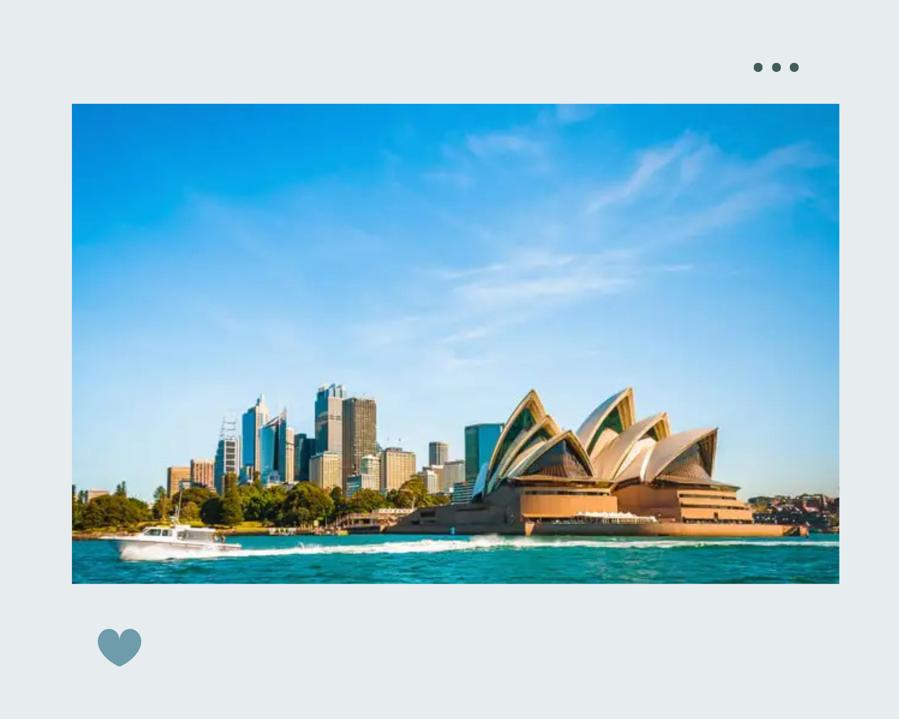
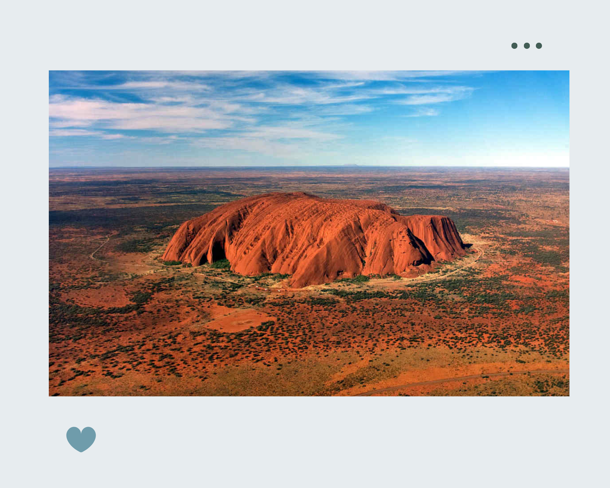
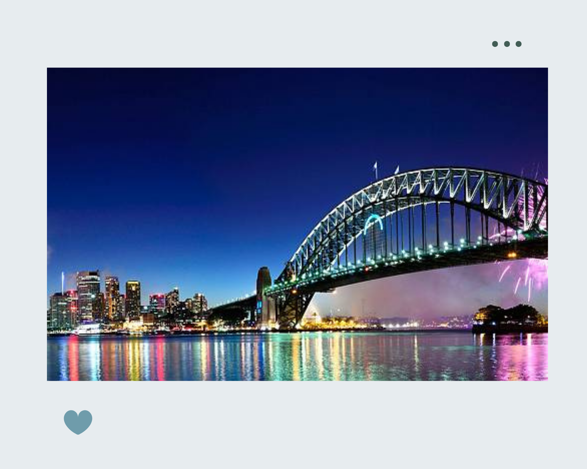
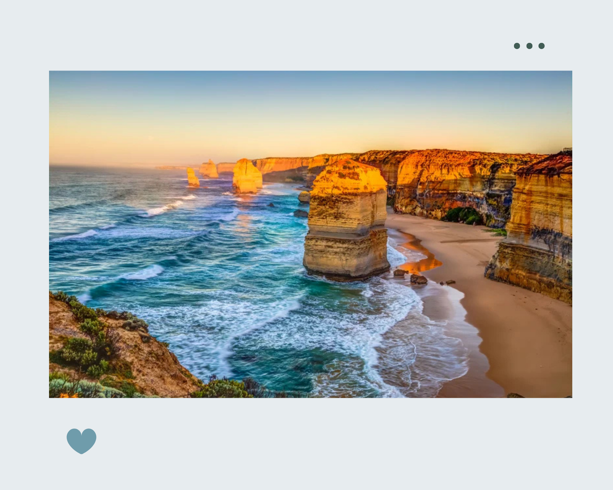

Sydney, Australia offers the Sydney Opera house, flanked by the scenic Harbor Bridge and the beautiful Royal Botanic Gardens, the Sydney Opera House is one of the most popular Australian tourist attractions. Considered as an architectural masterpiece of the century, this feat by mankind, hosts multiple venues designed to reflect the image of a huge sailing ship and resembles billowing sails or shells.

One of the largest monoliths in the world, Uluru or Ayers Rock is another important Australia tourist places. Located within the Kata Tjuta National Park, this striking red monolith sandstone formation, meaning ‘shadowy place’, stands more than 348 meters high. This is one of the best place for hitchhiking in Australia. If you are looking for Australia destinations that offer an offbeat experience, far away from the hustle and bustle of the city, this is the ideal place for you.

Among the most celebrated Australia tourist attractions, the Sydney Harbor Bridge is a must-visit. Rising 134 m above the harbor, the bridge is affectionately called “the Coat hanger”. This engineering marvel is also the largest steel arch bridge in the world.

Port Campbell National Park is world famous for its extraordinary collection of wave-sculpted rock formations and the Twelve Apostles. Loch Ard Gorge, site of a 19th century shipwreck 'Loch Ard', as well as the Island Archway and London Bridge are other highlights.